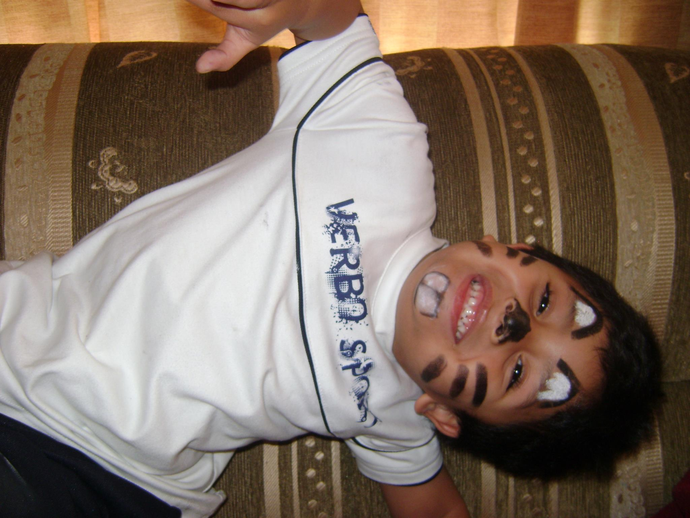

+1% life
+1% lifeLa vida es corta y quiero vivirla al máximo, es por eso que quiero plasmarla en algún lugar. Este es mi mapa personal en el cuál puedes encontrar cuáles son mis visiones y misiones en la vida así como un resumen sobre los 17 años que llevo en este mundo, hobbies dando a conocer lo que me gusta y en lo que invierto mi tiempo, también encontrarás mis experiencias, mis valores, principios y creencias y por último el plan de acción que llevaré a cabo para cumplir mis metas y objetivos.
Soy un joven Guatemalteco, evangélico, de 17 años con hambre de aprender y crecer en todos los ámbitos de la vida, soy alguien muy perseverante y disciplinado al punto que cuando quiero algo hago lo posible para conseguirlo, soy alguien fiel a mis convicciones, actuando acorde a ellas en todo lo que hago, me considero alguien respetuoso, noble, alegre y nada rencoroso, esas son algunas cualidades que me definen; me gusta hacer las cosas sin importar lo que piensen de mí. Soy alguien enfocado en lo que quiero y trabajo para ser un 1% mejor cada día.
